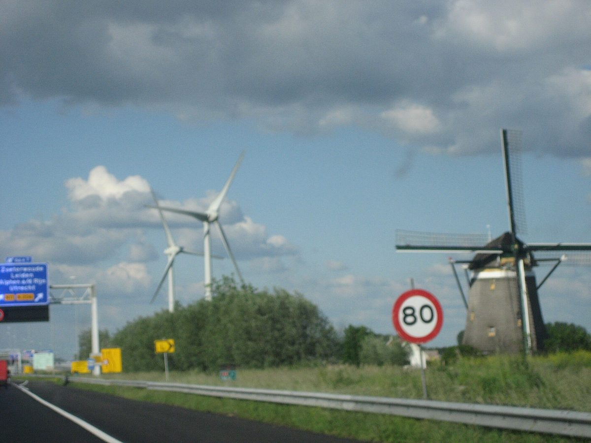

네덜란드 조테르바우더 협동조합 풍력단지 옆에 10MW·20MWh 배터리…주민은 풍력·배터리 수익 함께 나누고 이웃 기업은 계통 숨통

라인란트 에너지 협동조합·에메트 그린 공동 사업 '더 바터회이전', 6MW 풍력기 2기 접속점 그대로 쓰고 배전사업자와 용량 제한 계약 2건…2027년 봄 정격 가동 목표
네덜란드 자위트홀란트주 조테르바우더의 A4 고속도로 옆 풍력단지 '더 바터회이전(De Watergeuzen)'에 10MW·20MWh 규모의 배터리가 들어선다. 지역 협동조합인 라인란트 에너지 협동조합(Rijnland Energie Coöperatie)과 에너지 기업 에메트 그린(Emmett Green)의 공동 사업으로 자금 조달을 마쳤으며, 올가을 기초 공사를 시작해 2027년 봄 정격 가동을 목표로 한다. 협동조합은 2020년부터 돌아가는 합계 6MW 풍력기 2기의 주인이고, 에메트 그린은 처음부터 협동조합을 통한 지역 주민, 투자기금 메이빈트(Meewind)와 함께 공동 소유자로 참여해 왔으며, 남은 투자비는 StartGreen Capital 대출로 채웠다. 배터리는 접속 용량에 여유가 있던 풍력기의 계통 접속점을 함께 쓰는데, 20MWh는 풍력기 2기가 최대 출력으로 3시간 넘게 만드는 전기를 담을 수 있는 양이다. 사업 측은 배전사업자 리안더(Liander)와 용량 제한 계약 2건을 맺어 혼잡이 우려될 때 리안더가 사용을 잠시 줄일 수 있게 했고, 그만큼 리안더는 근처 산업단지에서 계통 연결을 기다리는 일부 기업에 용량을 더 내줄 수 있게 됐다. 이웃 주민은 풍력기와 배터리 양쪽의 수익을 함께 나누며, 인허가·자금·리안더 협상을 맡은 에메트 그린 측은 "이렇게 하면 접속점을 훨씬 잘 쓰게 된다"고 설명했다.
시민에너지 관점
6MW 풍력기 2기의 기존 접속점에 새 계통 공사 없이 20MWh 저장장치를 붙여 수익원을 늘리고, 혼잡할 때 사용을 양보하는 계약으로 이웃 기업의 계통 자리까지 만든 이 사례는 시민 발전소가 지역 계통 문제의 원인이 아니라 해법이 될 수 있음을 보여 준다. 같은 방식의 코트베이커르브루크 계통 배터리가 기업 60곳의 접속 여유를 만들었다는 점도 그 효과가 작지 않다는 근거다. 배터리 시장 거래는 시민 조직이 감당하기 어렵다는 우려가 있지만, 이 사업은 전문 기업이 실무를 맡고 주민이 협동조합을 통해 발전과 저장의 수익을 함께 나누는 분업으로 풀었다. 국내에서도 계통 포화로 발이 묶인 햇빛소득마을과 공공부지 태양광이 기존 접속점에 저장장치를 붙이고 배전망 운영자와 용량 조정 계약을 맺을 수 있도록 제도를 열어, 주민 발전소가 지역 산업과 계통을 함께 나누는 길을 만들어야 한다.
출처: Solar & Storage Magazine 2026-10-29 엘스 스튈티언스(Els Stultiens) 원문 보기
オランダ・ゾーテルワウデの協同組合風力発電所の隣に10MW・20MWhの蓄電池…住民は風力と蓄電池の収益を分かち合い、近隣企業は系統に余裕
ラインラント・エネルギー協同組合とエメット・グリーンの共同事業「デ・ワーテルヘーゼン」、6MWの風車2基の接続点をそのまま使い配電会社と容量制限契約2件…2027年春の定格運転を目指す
オランダ南ホラント州ゾーテルワウデの高速道路A4沿いにある風力発電所「デ・ワーテルヘーゼン（De Watergeuzen）」に、10MW・20MWh規模の蓄電池が設置される。地域の協同組合であるラインラント・エネルギー協同組合（Rijnland Energie Coöperatie）とエネルギー企業エメット・グリーン（Emmett Green）の共同事業で、資金調達を終え、今秋に基礎工事を始めて2027年春の定格運転を目指す。協同組合は2020年から稼働する合計6MWの風車2基の所有者で、エメット・グリーンは当初から、協同組合を通じた地域住民や投資ファンドのメーウィント（Meewind）とともに共同所有者として参加しており、残りの投資費はStartGreen Capitalからの融資でまかなった。蓄電池は接続容量に余裕のあった風車の系統接続点を共用し、20MWhは風車2基が最大出力で3時間余り発電する電気をためられる量にあたる。事業者側は配電会社リアンダー（Liander）と容量制限契約を2件結び、混雑のおそれがあるときにはリアンダーが使用を一時的に抑えられるようにしたことで、リアンダーは近くの産業団地で系統接続を待つ一部の企業に容量を追加で割り当てられるようになった。近隣住民は風車と蓄電池の双方の収益を分かち合い、許認可・資金調達・リアンダーとの交渉を担ったエメット・グリーン側は「こうすれば接続点をずっと有効に使える」と説明した。
市民エネルギーの視点
6MWの風車2基の既存の接続点に、新たな系統工事なしで20MWhの蓄電設備を加えて収益源を増やし、混雑時に使用を譲る契約で近隣企業の系統の空きまで生み出したこの事例は、市民発電所が地域の系統問題の原因ではなく解決策になりうることを示している。同じ方式のコートワイケルブルックの系統用蓄電池が企業60社分の接続余地を生んだことも、その効果が小さくない根拠だ。蓄電池の市場取引は市民組織の手に余るとの懸念もあるが、この事業は専門企業が実務を担い、住民が協同組合を通じて発電と蓄電の収益を分かち合う分業で解決した。韓国でも、系統の飽和で足止めされている陽光所得村や公有地太陽光が既存の接続点に蓄電設備を加え、配電網の運営者と容量調整契約を結べるよう制度を開き、住民の発電所が地域の産業と系統を分かち合う道をつくるべきだ。
出典: Solar & Storage Magazine 2026-10-29 エルス・ストゥルティエンス（Els Stultiens） 原文を読む
荷兰佐特尔伍德合作社风电场旁建10MW/20MWh电池…居民共享风电与储能收益，周边企业电网压力缓解
莱茵兰能源合作社与Emmett Green合作项目“De Watergeuzen”，沿用两台合计6MW风机的并网点，并与配电运营商签订两份限容合同…目标2027年春满功率运行
荷兰南荷兰省佐特尔伍德A4高速公路旁的风电场“De Watergeuzen”将建设一座10MW/20MWh的电池储能系统。这是当地合作社莱茵兰能源合作社（Rijnland Energie Coöperatie）与能源企业Emmett Green的合作项目，目前已完成融资，计划今年秋季开始基础施工，目标在2027年春季实现满功率运行。合作社拥有自2020年起运转、合计6MW的两台风机；Emmett Green从一开始就与通过合作社参与的当地居民以及投资基金Meewind一起作为共同所有者参与，其余投资则通过StartGreen Capital的贷款解决。电池将共用风机原有并网点，该并网点尚有余量；20MWh相当于两台风机以最大出力发电3个多小时的电量。项目方与配电运营商Liander签订了两份限容合同，允许Liander在可能出现拥堵时暂时限制使用，Liander因此可以向附近产业园区中正在排队等待并网的部分企业追加分配容量。周边居民共同分享风机和电池两方面的收益；负责许可、融资及与Liander谈判的Emmett Green方面表示：“这样可以把并网点用得好得多。”
市民能源视角
在两台合计6MW风机的既有并网点上，不新建电网就加装20MWh储能来增加收益来源，并通过在拥堵时让出使用权的合同为周边企业腾出电网空间，这一案例说明市民发电站可以成为解决而不是造成地方电网问题的力量。采用同样方式的科特韦克布鲁克电网电池为60家企业腾出了并网余量，也证明其效果并不小。有人担心电池的市场交易超出市民组织的能力，但这个项目通过分工解决了问题：专业企业负责实务，居民通过合作社共同分享发电与储能的收益。韩国也应开放制度，让因电网饱和而停滞的阳光收入村和公共用地光伏能够在既有并网点加装储能，并与配电网运营方签订容量调整合同，为居民发电站与地方产业共享电网开辟道路。
来源: Solar & Storage Magazine 2026-10-29 埃尔斯·斯图尔蒂恩斯（Els Stultiens） 查看原文
Dutch cooperative wind farm in Zoeterwoude adds 10MW/20MWh battery; residents share wind and battery revenue while nearby firms gain grid room
Joint project of Rijnland Energie Coöperatie and Emmett Green at De Watergeuzen reuses the connection of two turbines totalling 6MW and signs two capacity-limiting contracts with the grid operator, aiming for full operation in spring 2027
A 10MW/20MWh battery is to be built at the De Watergeuzen wind farm beside the A4 motorway in Zoeterwoude, in the Dutch province of South Holland. The joint project of the local Rijnland Energie Coöperatie and energy company Emmett Green has completed its financing, with foundation work starting this autumn and full-power operation targeted for spring 2027. The cooperative owns the two turbines, totalling 6MW, that have been running since 2020, and Emmett Green has been a co-owner from the start alongside local residents investing through the cooperative and the investment fund Meewind, with the remaining investment covered by a loan from StartGreen Capital. The battery will share the turbines' grid connection, which had spare capacity, and its 20MWh can hold more than three hours of both turbines running at full output. The partners signed two capacity-limiting contracts with distribution operator Liander that let it temporarily curb use when congestion looms, which in turn allows Liander to allocate extra capacity to some companies waiting for a grid connection on a nearby business park. Neighbouring residents share in the revenue from both the turbines and the battery, and Emmett Green, which handled permits, financing and negotiations with Liander, said "this way you make much better use of the connection."
Citizen Energy View
By adding 20MWh of storage to the existing connection of two turbines totalling 6MW without new grid works, increasing revenue and, through contracts to give way during congestion, freeing grid room for neighbouring firms, this case shows that citizen power plants can be a solution to local grid problems rather than their cause. That a grid battery built the same way in Kootwijkerbroek created connection room for 60 companies is evidence that the effect is far from small. Some worry that battery market trading is beyond citizen groups, but this project solved that through a division of labour in which a specialist firm handles the work while residents share generation and storage revenue through the cooperative. Korea too should open its rules so that Sunlight Income Villages and solar on public land held back by grid saturation can add storage at existing connections and sign capacity-adjustment contracts with grid operators, creating a path for residents' power plants to share the grid with local industry.
Source: Solar & Storage Magazine 2026-10-29 Els Stultiens Read the original